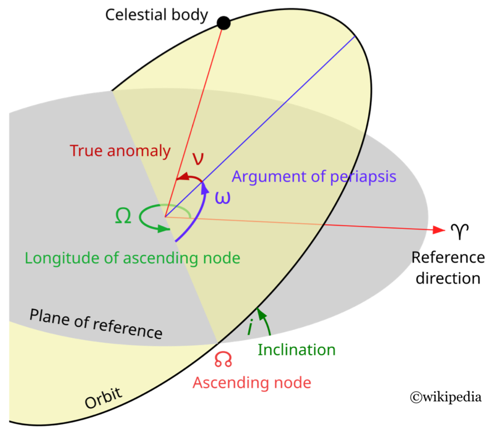
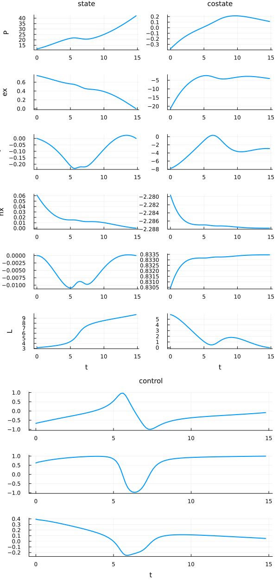
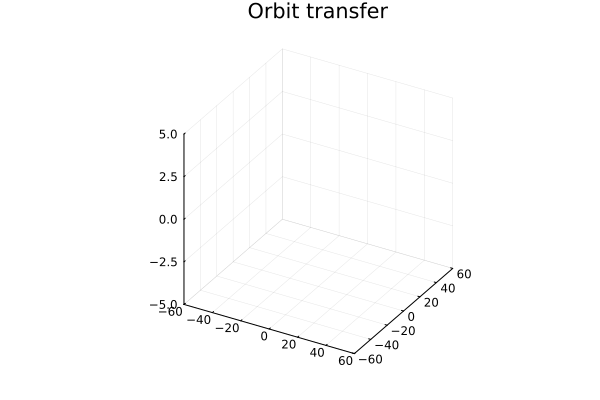

Minimum time orbit transfer
Introduction
Minimum time control of the Kepler equation (CNES / TAS / Inria / CNRS collaboration, check [1] and [2]):
\[\begin{cases} t_f \to \min,\\ \ddot{q} = -\mu\frac{q}{|q|^3} + \frac{u}{m}\,,\quad t \in [0,t_f],\\ \dot{m} = -\beta|u|,\quad |u| \leq T_{\mathrm{max}}. \end{cases}\]
Fixed initial and final Keplerian orbits (free final longitude).

using OptimalControl
using NLPModelsIpopt
using OrdinaryDiffEq
using Plots
using MINPACK
using ForwardDiff
using LinearAlgebraProblem definition
Tmax = 60 # Maximum thrust in Newtons
cTmax = 3600^2 / 1e6; T = Tmax * cTmax # Conversion from Newtons to kg x Mm / h²
mass0 = 1500 # Initial mass of the spacecraft
β = 1.42e-02 # Engine specific impulsion
μ = 5165.8620912 # Earth gravitation constant
P0 = 11.625 # Initial semilatus rectum
ex0, ey0 = 0.75, 0 # Initial eccentricity
hx0, hy0 = 6.12e-2, 0 # Initial ascending node and inclination
L0 = π # Initial longitude
Pf = 42.165 # Final semilatus rectum
exf, eyf = 0, 0 # Final eccentricity
hxf, hyf = 0, 0 # Final ascending node and inclination
asqrt(x; ε=1e-9) = sqrt(sqrt(x^2+ε^2)) # Avoid issues with AD
function F0(x)
P, ex, ey, hx, hy, L = x
pdm = asqrt(P / μ)
cl = cos(L)
sl = sin(L)
w = 1 + ex * cl + ey * sl
F = zeros(eltype(x), 6) # Use eltype to allow overloading for AD
F[6] = w^2 / (P * pdm)
return F
end
function F1(x)
P, ex, ey, hx, hy, L = x
pdm = asqrt(P / μ)
cl = cos(L)
sl = sin(L)
F = zeros(eltype(x), 6)
F[2] = pdm * sl
F[3] = pdm * (-cl)
return F
end
function F2(x)
P, ex, ey, hx, hy, L = x
pdm = asqrt(P / μ)
cl = cos(L)
sl = sin(L)
w = 1 + ex * cl + ey * sl
F = zeros(eltype(x), 6)
F[1] = pdm * 2 * P / w
F[2] = pdm * (cl + (ex + cl) / w)
F[3] = pdm * (sl + (ey + sl) / w)
return F
end
function F3(x)
P, ex, ey, hx, hy, L = x
pdm = asqrt(P / μ)
cl = cos(L)
sl = sin(L)
w = 1 + ex * cl + ey * sl
pdmw = pdm / w
zz = hx * sl - hy * cl
uh = (1 + hx^2 + hy^2) / 2
F = zeros(eltype(x), 6)
F[2] = pdmw * (-zz * ey)
F[3] = pdmw * zz * ex
F[4] = pdmw * uh * cl
F[5] = pdmw * uh * sl
F[6] = pdmw * zz
return F
endDirect solve
tf = 15 # Estimation of final time
Lf = 3π # Estimation of final longitude
x0 = [P0, ex0, ey0, hx0, hy0, L0] # Initial state
xf = [Pf, exf, eyf, hxf, hyf, Lf] # Final state
x(t) = x0 + (xf - x0) * t / tf # Linear interpolation
u = [0.1, 0.5, 0.] # Initial guess for the control
nlp_init = (state=x, control=u, variable=tf) # Initial guess for the NLP
ocp = @def begin
tf ∈ R, variable
t ∈ [0, tf], time
x = (P, ex, ey, hx, hy, L) ∈ R⁶, state
u ∈ R³, control
x(0) == x0
x[1:5](tf) == xf[1:5]
mass = mass0 - β * T * t
ẋ(t) == F0(x(t)) + T / mass * (u₁(t) * F1(x(t)) + u₂(t) * F2(x(t)) + u₃(t) * F3(x(t)))
u₁(t)^2 + u₂(t)^2 + u₃(t)^2 ≤ 1
tf → min
end tf ∈ R, variable
t ∈ [0, tf], time
x = ((P, ex, ey, hx, hy, L) ∈ R⁶, state)
u ∈ R³, control
x(0) == x0
(x[1:5])(tf) == xf[1:5]
mass = mass0 - β * T * t
ẋ(t) == F0(x(t)) + (T / mass) * (u₁(t) * F1(x(t)) + u₂(t) * F2(x(t)) + u₃(t) * F3(x(t)))
u₁(t) ^ 2 + u₂(t) ^ 2 + u₃(t) ^ 2 ≤ 1
tf → min
The optimal control problem is of the form:
minimize J(x, u, tf) = g(x(0), x(tf), tf)
subject to
ẋ(t) = f(t, x(t), u(t), tf), t in [0, tf] a.e.,
ψ₋ ≤ ψ(t, x(t), u(t), tf) ≤ ψ₊,
ϕ₋ ≤ ϕ(x(0), x(tf), tf) ≤ ϕ₊,
where x(t) = (P(t), ex(t), ey(t), hx(t), hy(t), L(t)) ∈ R⁶, u(t) ∈ R³ and tf ∈ R.
Declarations (* required):
╭────────┬────────┬──────────┬──────────┬───────────┬────────────┬─────────────╮
│ times* │ state* │ control* │ variable │ dynamics* │ objective* │ constraints │
├────────┼────────┼──────────┼──────────┼───────────┼────────────┼─────────────┤
│ V │ V │ V │ V │ V │ V │ V │
╰────────┴────────┴──────────┴──────────┴───────────┴────────────┴─────────────╯
nlp_sol = OptimalControl.solve(ocp; init=nlp_init, grid_size=100)This is Ipopt version 3.14.17, running with linear solver MUMPS 5.7.3.
Number of nonzeros in equality constraint Jacobian...: 11011
Number of nonzeros in inequality constraint Jacobian.: 303
Number of nonzeros in Lagrangian Hessian.............: 4445
Total number of variables............................: 910
variables with only lower bounds: 0
variables with lower and upper bounds: 0
variables with only upper bounds: 0
Total number of equality constraints.................: 611
Total number of inequality constraints...............: 101
inequality constraints with only lower bounds: 0
inequality constraints with lower and upper bounds: 0
inequality constraints with only upper bounds: 101
iter objective inf_pr inf_du lg(mu) ||d|| lg(rg) alpha_du alpha_pr ls
0 1.5000000e+01 2.14e-01 2.46e-01 0.0 0.00e+00 - 0.00e+00 0.00e+00 0
1 1.5632877e+01 1.73e-01 6.59e-01 -6.1 7.27e+00 - 5.95e-01 1.90e-01h 3
2 1.6096872e+01 1.51e-01 1.15e+00 -6.4 3.71e+00 0.0 4.78e-01 1.25e-01h 4
3 1.9018883e+01 6.12e-02 2.70e+00 -1.1 3.97e+00 -0.5 7.39e-01 6.03e-01H 1
4 2.0358419e+01 1.56e-02 1.98e+00 -1.7 1.60e+00 -0.1 1.00e+00 8.38e-01h 1
5 2.0617233e+01 2.68e-04 4.98e-01 -3.6 2.59e-01 0.4 1.00e+00 1.00e+00h 1
6 2.0429778e+01 3.01e-04 1.53e-01 -3.7 1.87e-01 -0.1 1.00e+00 1.00e+00h 1
7 1.9857419e+01 2.52e-03 1.52e-01 -4.6 5.72e-01 -0.6 1.00e+00 1.00e+00f 1
8 1.9319499e+01 5.35e-03 1.22e-01 -2.7 1.03e+00 -1.1 1.00e+00 5.20e-01f 1
9 1.8399038e+01 4.64e-02 7.26e-02 -2.4 1.40e+00 -1.5 1.00e+00 6.59e-01f 1
iter objective inf_pr inf_du lg(mu) ||d|| lg(rg) alpha_du alpha_pr ls
10 1.7193105e+01 3.05e+00 2.62e-01 -2.1 3.01e+00 -2.0 1.00e+00 8.31e-01f 1
11 1.5106279e+01 1.10e+01 3.82e-01 -2.2 1.36e+01 -2.5 1.70e-01 3.23e-01h 1
12 1.5675085e+01 2.15e+00 2.08e-01 -2.2 1.62e+00 -1.2 7.98e-01 1.00e+00h 1
13 1.5767117e+01 1.59e-01 7.09e-02 -2.2 7.59e-01 -0.7 1.00e+00 1.00e+00h 1
14 1.5167619e+01 5.39e-01 1.06e-01 -1.9 6.62e+00 - 1.00e+00 4.46e-01h 1
15 1.5207976e+01 1.55e-01 2.60e-01 -2.2 1.87e+00 - 1.00e+00 7.88e-01h 1
16 1.4958081e+01 2.78e-02 2.02e-02 -4.0 4.59e-01 - 1.00e+00 9.93e-01h 1
17 1.5012097e+01 4.19e-01 7.47e-03 -2.5 6.61e-01 - 1.00e+00 9.34e-01h 1
18 1.4993570e+01 2.41e-04 5.76e-04 -2.7 3.51e-01 - 1.00e+00 1.00e+00h 1
19 1.4814517e+01 9.34e-04 3.26e-03 -8.7 2.05e-01 - 1.00e+00 1.00e+00h 1
iter objective inf_pr inf_du lg(mu) ||d|| lg(rg) alpha_du alpha_pr ls
20 1.4796807e+01 5.17e-04 5.95e-05 -5.1 6.84e-02 - 1.00e+00 1.00e+00h 1
21 1.4796405e+01 1.26e-07 1.37e-08 -11.0 1.93e-03 - 1.00e+00 1.00e+00h 1
22 1.4796405e+01 7.11e-15 1.89e-14 -11.0 2.11e-06 - 1.00e+00 1.00e+00h 1
Number of Iterations....: 22
(scaled) (unscaled)
Objective...............: 1.4796404502710013e+01 1.4796404502710013e+01
Dual infeasibility......: 1.8929302569858919e-14 1.8929302569858919e-14
Constraint violation....: 7.1054273576010019e-15 7.1054273576010019e-15
Variable bound violation: 0.0000000000000000e+00 0.0000000000000000e+00
Complementarity.........: 1.0004070416573207e-11 1.0004070416573207e-11
Overall NLP error.......: 1.0004070416573207e-11 1.0004070416573207e-11
Number of objective function evaluations = 34
Number of objective gradient evaluations = 23
Number of equality constraint evaluations = 34
Number of inequality constraint evaluations = 34
Number of equality constraint Jacobian evaluations = 23
Number of inequality constraint Jacobian evaluations = 23
Number of Lagrangian Hessian evaluations = 22
Total seconds in IPOPT = 5.973
EXIT: Optimal Solution Found.tf = variable(nlp_sol)
p = costate(nlp_sol)
p0 = p(0)
plot(nlp_sol)
Shooting (1/2), Tmax = 60 Newtons
function ur(x, p, tf) # Regular maximising control
H1 = p' * F1(x)
H2 = p' * F2(x)
H3 = p' * F3(x)
u = [H1, H2, H3]
u = u / sqrt(u[1]^2 + u[2]^2 + u[3]^2)
return u
end
fr = Flow(ocp, ur) # Regular flow (first version)
function shoot(ξ::Vector{T}) where T
tf, p0 = ξ[1], ξ[2:end]
xf_, pf = fr(0, x0, p0, tf)
s = zeros(T, 7)
s[1:5] = xf_[1:5] - xf[1:5]
s[6] = pf[6]
s[7] = p0[1]^2 + p0[2]^2 + p0[3]^2 + p0[4]^2 + p0[5]^2 + p0[6]^2 - 1
return s
end
p0 = p0 / norm(p0) # Normalization |p0|=1 for free final time
ξ = [tf; p0]; # Initial guess
jshoot(ξ) = ForwardDiff.jacobian(shoot, ξ)
shoot!(s, ξ) = (s[:] = shoot(ξ); nothing)
jshoot!(js, ξ) = (js[:] = jshoot(ξ); nothing)
bvp_sol = fsolve(shoot!, jshoot!, ξ; show_trace=true); println(bvp_sol)Iter f(x) inf-norm Step 2-norm Step time
------ -------------- -------------- --------------
1 1.441506e+00 0.000000e+00 7.024831
2 7.828938e-02 5.822027e-05 23.534564
3 1.805662e-02 1.793354e-05 0.006456
4 4.039662e-03 6.128462e-07 0.015376
5 1.137949e-04 1.107466e-08 0.006070
6 6.538025e-05 1.358877e-10 0.008554
7 6.246359e-06 4.488870e-12 0.006025
8 3.534264e-08 5.344945e-14 0.008312
9 3.606004e-10 1.853600e-18 0.005896
Results of Nonlinear Solver Algorithm
* Algorithm: Modified Powell (User Jac, Expert)
* Starting Point: [14.796404502710013, -0.016164435389650858, -0.9050962202930851, -0.33067877687115294, -0.09648290171205891, 0.03514811057836572, 0.24626560776262557]
* Zero: [14.800364354664756, -0.016189714921626873, -0.9084889547974427, -0.32525985898304305, -0.09447217088704613, 0.03432296283542479, 0.24184432891069738]
* Inf-norm of residuals: 0.000000
* Convergence: true
* Message: algorithm estimates that the relative error between x and the solution is at most tol
* Total time: 30.616115 seconds
* Function Calls: 9
* Jacobian Calls (df/dx): 1Shooting (2/2), Tmax = 0.7 Newtons
hr = (t, x, p) -> begin # Regular maximised Hamiltonian (more efficient)
H0 = p' * F0(x)
H1 = p' * F1(x)
H2 = p' * F2(x)
H3 = p' * F3(x)
mass = mass0 - β*T*t
h = H0 + T / mass * sqrt(H1^2 + H2^2 + H3^2)
return h
end
hr = Hamiltonian(hr; autonomous=false)
fr = Flow(hr) # Regular flow (again)
Tmax = 0.7 # Maximum thrust (Newtons)
cTmax = 3600^2 / 1e6; T = Tmax * cTmax # Conversion from Newtons to kg x Mm / h²
tf = 1.210e3; p0 =-[-2.215319700438820e+01, -4.347109477345140e+01, 9.613188807286992e-01, 3.181800985503019e+02, -2.307236094862410e+00, -5.797863110671591e-01] # Tmax = 0.7 Newtons
p0 = p0 / norm(p0) # Normalization |p0|=1 for free final time
ξ = [tf; p0]; # Initial guess
bvp_sol = fsolve(shoot!, jshoot!, ξ; show_trace=true); println(bvp_sol)Iter f(x) inf-norm Step 2-norm Step time
------ -------------- -------------- --------------
1 1.073118e+00 0.000000e+00 4.488780
2 1.431619e-01 1.222060e+01 15.811168
3 1.090263e-01 1.104500e+01 0.310662
4 1.847681e-02 2.971575e+00 0.289602
5 1.996342e-02 4.468500e-01 0.274887
6 8.607891e-03 2.181855e-02 0.262624
7 2.826201e-03 2.618597e-03 0.265322
8 1.241794e-03 7.993872e-05 0.288411
9 1.555157e-03 6.602970e-05 0.262202
10 7.599961e-05 2.809120e-05 0.268491
11 4.206481e-05 1.773353e-07 0.280197
12 7.672444e-06 3.852977e-07 0.270287
13 5.441236e-07 7.260827e-09 0.276081
14 5.909087e-08 4.510506e-11 0.683204
15 2.813787e-08 2.110683e-13 0.350670
16 4.440955e-09 3.591076e-17 0.306059
Results of Nonlinear Solver Algorithm
* Algorithm: Modified Powell (User Jac, Expert)
* Starting Point: [1210.0, 0.06881811251625697, 0.13504139789537645, -0.0029863026489984875, -0.9884150724670144, 0.007167346236588738, 0.001801085395597836]
* Zero: [1214.5922195529836, 0.06933409656211512, 0.5161919854246422, -0.0002316690086500129, -0.8536506970530086, 0.004363238004614628, -9.327820837705058e-5]
* Inf-norm of residuals: 0.000000
* Convergence: true
* Message: algorithm estimates that the relative error between x and the solution is at most tol
* Total time: 24.688725 seconds
* Function Calls: 16
* Jacobian Calls (df/dx): 1Plots
tf = bvp_sol.x[1]
p0 = bvp_sol.x[2:end]
ode_sol = fr((0, tf), x0, p0)
t = ode_sol.t; N = size(t, 1)
P = ode_sol[1, :]
ex = ode_sol[2, :]
ey = ode_sol[3, :]
hx = ode_sol[4, :]
hy = ode_sol[5, :]
L = ode_sol[6, :]
cL = cos.(L)
sL = sin.(L)
w = @. 1 + ex * cL + ey * sL
Z = @. hx * sL - hy * cL
C = @. 1 + hx^2 + hy^2
q1 = @. P *((1 + hx^2 - hy^2) * cL + 2 * hx * hy * sL) / (C * w)
q2 = @. P *((1 - hx^2 + hy^2) * sL + 2 * hx * hy * cL) / (C * w)
q3 = @. 2 * P * Z / (C * w)
plt1 = plot3d(1; xlim = (-60, 60), ylim = (-60, 60), zlim = (-5, 5), title = "Orbit transfer", legend=false)
@gif for i = 1:N
push!(plt1, q1[i], q2[i], q3[i])
end every N ÷ min(N, 100)
Reproducibility
The documentation of this package was built using these direct dependencies,
Status `~/work/Kepler.jl/Kepler.jl/docs/Project.toml`
[e30172f5] Documenter v1.11.0
⌅ [f6369f11] ForwardDiff v0.10.38
[459d104a] Kepler v0.2.0 `~/work/Kepler.jl/Kepler.jl`
[4854310b] MINPACK v1.3.0
[f4238b75] NLPModelsIpopt v0.10.4
[5f98b655] OptimalControl v1.0.3
[1dea7af3] OrdinaryDiffEq v6.96.0
[91a5bcdd] Plots v1.40.13
[37e2e46d] LinearAlgebra v1.11.0
Info Packages marked with ⌅ have new versions available but compatibility constraints restrict them from upgrading. To see why use `status --outdated`and using this machine and Julia version.
Julia Version 1.11.5
Commit 760b2e5b739 (2025-04-14 06:53 UTC)
Build Info:
Official https://julialang.org/ release
Platform Info:
OS: Linux (x86_64-linux-gnu)
CPU: 4 × AMD EPYC 7763 64-Core Processor
WORD_SIZE: 64
LLVM: libLLVM-16.0.6 (ORCJIT, znver3)
Threads: 1 default, 0 interactive, 1 GC (on 4 virtual cores)
Environment:
JULIA_PKG_SERVER_REGISTRY_PREFERENCE = eagerA more complete overview of all dependencies and their versions is also provided.
Status `~/work/Kepler.jl/Kepler.jl/docs/Manifest.toml`
[54578032] ADNLPModels v0.8.12
[47edcb42] ADTypes v1.14.0
[a4c015fc] ANSIColoredPrinters v0.0.1
[1520ce14] AbstractTrees v0.4.5
[7d9f7c33] Accessors v0.1.42
[79e6a3ab] Adapt v4.3.0
[66dad0bd] AliasTables v1.1.3
[4fba245c] ArrayInterface v7.18.1
[4c555306] ArrayLayouts v1.11.1
[13072b0f] AxisAlgorithms v1.1.0
[d1d4a3ce] BitFlags v0.1.9
[62783981] BitTwiddlingConvenienceFunctions v0.1.6
[70df07ce] BracketingNonlinearSolve v1.2.0
[2a0fbf3d] CPUSummary v0.2.6
[54762871] CTBase v0.16.0
[790bbbee] CTDirect v0.14.10
[1c39547c] CTFlows v0.8.2
[34c4fa32] CTModels v0.3.8
[32681960] CTParser v0.2.5
[d360d2e6] ChainRulesCore v1.25.1
[fb6a15b2] CloseOpenIntervals v0.1.13
[944b1d66] CodecZlib v0.7.8
[35d6a980] ColorSchemes v3.29.0
[3da002f7] ColorTypes v0.12.1
[c3611d14] ColorVectorSpace v0.11.0
[5ae59095] Colors v0.13.0
[38540f10] CommonSolve v0.2.4
[bbf7d656] CommonSubexpressions v0.3.1
[f70d9fcc] CommonWorldInvalidations v1.0.0
[34da2185] Compat v4.16.0
[a33af91c] CompositionsBase v0.1.2
[2569d6c7] ConcreteStructs v0.2.3
[f0e56b4a] ConcurrentUtilities v2.5.0
[187b0558] ConstructionBase v1.5.8
[d38c429a] Contour v0.6.3
[adafc99b] CpuId v0.3.1
[a8cc5b0e] Crayons v4.1.1
[9a962f9c] DataAPI v1.16.0
[864edb3b] DataStructures v0.18.22
[e2d170a0] DataValueInterfaces v1.0.0
[8bb1440f] DelimitedFiles v1.9.1
[2b5f629d] DiffEqBase v6.172.0
[163ba53b] DiffResults v1.1.0
[b552c78f] DiffRules v1.15.1
[a0c0ee7d] DifferentiationInterface v0.6.53
[ffbed154] DocStringExtensions v0.9.4
[e30172f5] Documenter v1.11.0
[4e289a0a] EnumX v1.0.5
[f151be2c] EnzymeCore v0.8.8
[460bff9d] ExceptionUnwrapping v0.1.11
[d4d017d3] ExponentialUtilities v1.27.0
[e2ba6199] ExprTools v0.1.10
[55351af7] ExproniconLite v0.10.14
[c87230d0] FFMPEG v0.4.2
[7034ab61] FastBroadcast v0.3.5
[9aa1b823] FastClosures v0.3.2
[442a2c76] FastGaussQuadrature v1.0.2
[a4df4552] FastPower v1.1.2
[1a297f60] FillArrays v1.13.0
[6a86dc24] FiniteDiff v2.27.0
[53c48c17] FixedPointNumbers v0.8.5
[1fa38f19] Format v1.3.7
⌅ [f6369f11] ForwardDiff v0.10.38
[069b7b12] FunctionWrappers v1.1.3
[77dc65aa] FunctionWrappersWrappers v0.1.3
[46192b85] GPUArraysCore v0.2.0
[28b8d3ca] GR v0.73.14
[c145ed77] GenericSchur v0.5.5
[d7ba0133] Git v1.4.0
[42e2da0e] Grisu v1.0.2
[34c5aeac] HSL v0.5.1
[cd3eb016] HTTP v1.10.16
[b5f81e59] IOCapture v0.2.5
[615f187c] IfElse v0.1.1
[a98d9a8b] Interpolations v0.15.1
[3587e190] InverseFunctions v0.1.17
[b6b21f68] Ipopt v1.10.3
[92d709cd] IrrationalConstants v0.2.4
[82899510] IteratorInterfaceExtensions v1.0.0
[1019f520] JLFzf v0.1.11
[692b3bcd] JLLWrappers v1.7.0
[682c06a0] JSON v0.21.4
[ae98c720] Jieko v0.2.1
[459d104a] Kepler v0.2.0 `~/work/Kepler.jl/Kepler.jl`
[ba0b0d4f] Krylov v0.10.1
[b964fa9f] LaTeXStrings v1.4.0
[23fbe1c1] Latexify v0.16.7
[10f19ff3] LayoutPointers v0.1.17
[0e77f7df] LazilyInitializedFields v1.3.0
[5078a376] LazyArrays v2.6.1
[87fe0de2] LineSearch v0.1.4
[d3d80556] LineSearches v7.3.0
[5c8ed15e] LinearOperators v2.10.0
[7ed4a6bd] LinearSolve v3.11.0
[2ab3a3ac] LogExpFunctions v0.3.29
[e6f89c97] LoggingExtras v1.1.0
[4854310b] MINPACK v1.3.0
[33e6dc65] MKL v0.8.0
[d8e11817] MLStyle v0.4.17
[1914dd2f] MacroTools v0.5.16
[d125e4d3] ManualMemory v0.1.8
[d0879d2d] MarkdownAST v0.1.2
[bb5d69b7] MaybeInplace v0.1.4
[739be429] MbedTLS v1.1.9
[442fdcdd] Measures v0.3.2
[e1d29d7a] Missings v1.2.0
[2e0e35c7] Moshi v0.3.5
[46d2c3a1] MuladdMacro v0.2.4
[a4795742] NLPModels v0.21.4
[f4238b75] NLPModelsIpopt v0.10.4
[d41bc354] NLSolversBase v7.9.1
[77ba4419] NaNMath v1.1.3
[8913a72c] NonlinearSolve v4.8.0
[be0214bd] NonlinearSolveBase v1.7.0
[5959db7a] NonlinearSolveFirstOrder v1.5.0
[9a2c21bd] NonlinearSolveQuasiNewton v1.4.0
[26075421] NonlinearSolveSpectralMethods v1.2.0
[6fe1bfb0] OffsetArrays v1.17.0
[4d8831e6] OpenSSL v1.4.3
[5f98b655] OptimalControl v1.0.3
[bac558e1] OrderedCollections v1.8.0
[1dea7af3] OrdinaryDiffEq v6.96.0
[89bda076] OrdinaryDiffEqAdamsBashforthMoulton v1.2.0
[6ad6398a] OrdinaryDiffEqBDF v1.5.0
[bbf590c4] OrdinaryDiffEqCore v1.23.0
[50262376] OrdinaryDiffEqDefault v1.4.0
[4302a76b] OrdinaryDiffEqDifferentiation v1.7.0
[9286f039] OrdinaryDiffEqExplicitRK v1.1.0
[e0540318] OrdinaryDiffEqExponentialRK v1.4.0
[becaefa8] OrdinaryDiffEqExtrapolation v1.5.0
[5960d6e9] OrdinaryDiffEqFIRK v1.10.0
[101fe9f7] OrdinaryDiffEqFeagin v1.1.0
[d3585ca7] OrdinaryDiffEqFunctionMap v1.1.1
[d28bc4f8] OrdinaryDiffEqHighOrderRK v1.1.0
[9f002381] OrdinaryDiffEqIMEXMultistep v1.3.0
[521117fe] OrdinaryDiffEqLinear v1.1.0
[1344f307] OrdinaryDiffEqLowOrderRK v1.2.0
[b0944070] OrdinaryDiffEqLowStorageRK v1.3.0
[127b3ac7] OrdinaryDiffEqNonlinearSolve v1.6.1
[c9986a66] OrdinaryDiffEqNordsieck v1.1.0
[5dd0a6cf] OrdinaryDiffEqPDIRK v1.3.0
[5b33eab2] OrdinaryDiffEqPRK v1.1.0
[04162be5] OrdinaryDiffEqQPRK v1.1.0
[af6ede74] OrdinaryDiffEqRKN v1.1.0
[43230ef6] OrdinaryDiffEqRosenbrock v1.9.0
[2d112036] OrdinaryDiffEqSDIRK v1.3.0
[669c94d9] OrdinaryDiffEqSSPRK v1.3.0
[e3e12d00] OrdinaryDiffEqStabilizedIRK v1.3.0
[358294b1] OrdinaryDiffEqStabilizedRK v1.1.0
[fa646aed] OrdinaryDiffEqSymplecticRK v1.3.0
[b1df2697] OrdinaryDiffEqTsit5 v1.1.0
[79d7bb75] OrdinaryDiffEqVerner v1.2.0
[d96e819e] Parameters v0.12.3
[69de0a69] Parsers v2.8.3
[ccf2f8ad] PlotThemes v3.3.0
[995b91a9] PlotUtils v1.4.3
[91a5bcdd] Plots v1.40.13
[f517fe37] Polyester v0.7.16
[1d0040c9] PolyesterWeave v0.2.2
[d236fae5] PreallocationTools v0.4.27
⌅ [aea7be01] PrecompileTools v1.2.1
[21216c6a] Preferences v1.4.3
[08abe8d2] PrettyTables v2.4.0
[43287f4e] PtrArrays v1.3.0
[be4d8f0f] Quadmath v0.5.13
[c84ed2f1] Ratios v0.4.5
[3cdcf5f2] RecipesBase v1.3.4
[01d81517] RecipesPipeline v0.6.12
[731186ca] RecursiveArrayTools v3.33.0
[189a3867] Reexport v1.2.2
[2792f1a3] RegistryInstances v0.1.0
[05181044] RelocatableFolders v1.0.1
[ae029012] Requires v1.3.1
[37e2e3b7] ReverseDiff v1.16.1
[7e49a35a] RuntimeGeneratedFunctions v0.5.14
[94e857df] SIMDTypes v0.1.0
⌃ [0bca4576] SciMLBase v2.87.0
[19f34311] SciMLJacobianOperators v0.1.4
⌅ [c0aeaf25] SciMLOperators v0.3.13
[53ae85a6] SciMLStructures v1.7.0
[6c6a2e73] Scratch v1.2.1
[efcf1570] Setfield v1.1.2
[992d4aef] Showoff v1.0.3
[777ac1f9] SimpleBufferStream v1.2.0
[727e6d20] SimpleNonlinearSolve v2.4.0
[ce78b400] SimpleUnPack v1.1.0
[ff4d7338] SolverCore v0.3.8
[a2af1166] SortingAlgorithms v1.2.1
[9f842d2f] SparseConnectivityTracer v0.6.18
[0a514795] SparseMatrixColorings v0.4.19
[276daf66] SpecialFunctions v2.5.1
[860ef19b] StableRNGs v1.0.3
[aedffcd0] Static v1.2.0
[0d7ed370] StaticArrayInterface v1.8.0
[90137ffa] StaticArrays v1.9.13
[1e83bf80] StaticArraysCore v1.4.3
[10745b16] Statistics v1.11.1
[82ae8749] StatsAPI v1.7.0
[2913bbd2] StatsBase v0.34.5
[7792a7ef] StrideArraysCore v0.5.7
[892a3eda] StringManipulation v0.4.1
[2efcf032] SymbolicIndexingInterface v0.3.40
[3783bdb8] TableTraits v1.0.1
[bd369af6] Tables v1.12.0
[62fd8b95] TensorCore v0.1.1
[8290d209] ThreadingUtilities v0.5.3
[a759f4b9] TimerOutputs v0.5.28
[3bb67fe8] TranscodingStreams v0.11.3
[781d530d] TruncatedStacktraces v1.4.0
[5c2747f8] URIs v1.5.2
[3a884ed6] UnPack v1.0.2
[1cfade01] UnicodeFun v0.4.1
[1986cc42] Unitful v1.22.0
[45397f5d] UnitfulLatexify v1.6.4
[41fe7b60] Unzip v0.2.0
[efce3f68] WoodburyMatrices v1.0.0
[ae81ac8f] ASL_jll v0.1.3+0
[6e34b625] Bzip2_jll v1.0.9+0
⌃ [83423d85] Cairo_jll v1.18.4+0
[ee1fde0b] Dbus_jll v1.16.2+0
[2702e6a9] EpollShim_jll v0.0.20230411+1
[2e619515] Expat_jll v2.6.5+0
⌅ [b22a6f82] FFMPEG_jll v4.4.4+1
[a3f928ae] Fontconfig_jll v2.16.0+0
[d7e528f0] FreeType2_jll v2.13.4+0
[559328eb] FriBidi_jll v1.0.17+0
[0656b61e] GLFW_jll v3.4.0+2
[d2c73de3] GR_jll v0.73.14+0
[78b55507] Gettext_jll v0.21.0+0
[f8c6e375] Git_jll v2.49.0+0
⌃ [7746bdde] Glib_jll v2.82.4+0
[3b182d85] Graphite2_jll v1.3.15+0
[017b0a0e] HSL_jll v4.0.2+0
[2e76f6c2] HarfBuzz_jll v8.5.0+0
[e33a78d0] Hwloc_jll v2.12.0+0
[1d5cc7b8] IntelOpenMP_jll v2025.0.4+0
[9cc047cb] Ipopt_jll v300.1400.1700+0
[aacddb02] JpegTurbo_jll v3.1.1+0
[c1c5ebd0] LAME_jll v3.100.2+0
[88015f11] LERC_jll v4.0.1+0
[1d63c593] LLVMOpenMP_jll v18.1.8+0
[dd4b983a] LZO_jll v2.10.3+0
⌅ [e9f186c6] Libffi_jll v3.2.2+2
[7e76a0d4] Libglvnd_jll v1.7.1+1
[94ce4f54] Libiconv_jll v1.18.0+0
[4b2f31a3] Libmount_jll v2.41.0+0
[89763e89] Libtiff_jll v4.7.1+0
[38a345b3] Libuuid_jll v2.41.0+0
[d00139f3] METIS_jll v5.1.3+0
[856f044c] MKL_jll v2025.0.1+1
⌅ [d7ed1dd3] MUMPS_seq_jll v500.700.301+0
[e7412a2a] Ogg_jll v1.3.5+1
[656ef2d0] OpenBLAS32_jll v0.3.29+0
[9bd350c2] OpenSSH_jll v10.0.1+0
[458c3c95] OpenSSL_jll v3.5.0+0
[efe28fd5] OpenSpecFun_jll v0.5.6+0
[91d4177d] Opus_jll v1.3.3+0
[36c8627f] Pango_jll v1.56.1+0
[30392449] Pixman_jll v0.44.2+0
⌅ [c0090381] Qt6Base_jll v6.7.1+1
⌅ [629bc702] Qt6Declarative_jll v6.7.1+2
⌅ [ce943373] Qt6ShaderTools_jll v6.7.1+1
⌃ [e99dba38] Qt6Wayland_jll v6.7.1+1
⌅ [319450e9] SPRAL_jll v2024.5.8+0
[a44049a8] Vulkan_Loader_jll v1.3.243+0
⌃ [a2964d1f] Wayland_jll v1.21.0+2
[2381bf8a] Wayland_protocols_jll v1.36.0+0
⌅ [02c8fc9c] XML2_jll v2.13.6+1
[ffd25f8a] XZ_jll v5.8.1+0
[f67eecfb] Xorg_libICE_jll v1.1.2+0
[c834827a] Xorg_libSM_jll v1.2.6+0
[4f6342f7] Xorg_libX11_jll v1.8.12+0
[0c0b7dd1] Xorg_libXau_jll v1.0.13+0
[935fb764] Xorg_libXcursor_jll v1.2.4+0
[a3789734] Xorg_libXdmcp_jll v1.1.6+0
[1082639a] Xorg_libXext_jll v1.3.7+0
[d091e8ba] Xorg_libXfixes_jll v6.0.1+0
[a51aa0fd] Xorg_libXi_jll v1.8.3+0
[d1454406] Xorg_libXinerama_jll v1.1.6+0
[ec84b674] Xorg_libXrandr_jll v1.5.5+0
[ea2f1a96] Xorg_libXrender_jll v0.9.12+0
[c7cfdc94] Xorg_libxcb_jll v1.17.1+0
[cc61e674] Xorg_libxkbfile_jll v1.1.3+0
[e920d4aa] Xorg_xcb_util_cursor_jll v0.1.4+0
[12413925] Xorg_xcb_util_image_jll v0.4.0+1
[2def613f] Xorg_xcb_util_jll v0.4.0+1
[975044d2] Xorg_xcb_util_keysyms_jll v0.4.0+1
[0d47668e] Xorg_xcb_util_renderutil_jll v0.3.9+1
[c22f9ab0] Xorg_xcb_util_wm_jll v0.4.1+1
[35661453] Xorg_xkbcomp_jll v1.4.7+0
[33bec58e] Xorg_xkeyboard_config_jll v2.44.0+0
[c5fb5394] Xorg_xtrans_jll v1.6.0+0
[3161d3a3] Zstd_jll v1.5.7+1
[b792d7bf] cminpack_jll v1.3.12+0
[35ca27e7] eudev_jll v3.2.9+0
[214eeab7] fzf_jll v0.61.1+0
[1a1c6b14] gperf_jll v3.1.1+1
[a4ae2306] libaom_jll v3.11.0+0
[0ac62f75] libass_jll v0.15.2+0
[1183f4f0] libdecor_jll v0.2.2+0
[2db6ffa8] libevdev_jll v1.11.0+0
[f638f0a6] libfdk_aac_jll v2.0.3+0
[36db933b] libinput_jll v1.18.0+0
[b53b4c65] libpng_jll v1.6.48+0
[f27f6e37] libvorbis_jll v1.3.7+2
[009596ad] mtdev_jll v1.1.6+0
[1317d2d5] oneTBB_jll v2022.0.0+0
⌅ [1270edf5] x264_jll v2021.5.5+0
⌅ [dfaa095f] x265_jll v3.5.0+0
[d8fb68d0] xkbcommon_jll v1.8.1+0
[0dad84c5] ArgTools v1.1.2
[56f22d72] Artifacts v1.11.0
[2a0f44e3] Base64 v1.11.0
[ade2ca70] Dates v1.11.0
[8ba89e20] Distributed v1.11.0
[f43a241f] Downloads v1.6.0
[7b1f6079] FileWatching v1.11.0
[9fa8497b] Future v1.11.0
[b77e0a4c] InteractiveUtils v1.11.0
[4af54fe1] LazyArtifacts v1.11.0
[b27032c2] LibCURL v0.6.4
[76f85450] LibGit2 v1.11.0
[8f399da3] Libdl v1.11.0
[37e2e46d] LinearAlgebra v1.11.0
[56ddb016] Logging v1.11.0
[d6f4376e] Markdown v1.11.0
[a63ad114] Mmap v1.11.0
[ca575930] NetworkOptions v1.2.0
[44cfe95a] Pkg v1.11.0
[de0858da] Printf v1.11.0
[3fa0cd96] REPL v1.11.0
[9a3f8284] Random v1.11.0
[ea8e919c] SHA v0.7.0
[9e88b42a] Serialization v1.11.0
[1a1011a3] SharedArrays v1.11.0
[6462fe0b] Sockets v1.11.0
[2f01184e] SparseArrays v1.11.0
[f489334b] StyledStrings v1.11.0
[fa267f1f] TOML v1.0.3
[a4e569a6] Tar v1.10.0
[8dfed614] Test v1.11.0
[cf7118a7] UUIDs v1.11.0
[4ec0a83e] Unicode v1.11.0
[e66e0078] CompilerSupportLibraries_jll v1.1.1+0
[deac9b47] LibCURL_jll v8.6.0+0
[e37daf67] LibGit2_jll v1.7.2+0
[29816b5a] LibSSH2_jll v1.11.0+1
[c8ffd9c3] MbedTLS_jll v2.28.6+0
[14a3606d] MozillaCACerts_jll v2023.12.12
[4536629a] OpenBLAS_jll v0.3.27+1
[05823500] OpenLibm_jll v0.8.5+0
[efcefdf7] PCRE2_jll v10.42.0+1
[bea87d4a] SuiteSparse_jll v7.7.0+0
[83775a58] Zlib_jll v1.2.13+1
[8e850b90] libblastrampoline_jll v5.11.0+0
[8e850ede] nghttp2_jll v1.59.0+0
[3f19e933] p7zip_jll v17.4.0+2
Info Packages marked with ⌃ and ⌅ have new versions available. Those with ⌃ may be upgradable, but those with ⌅ are restricted by compatibility constraints from upgrading. To see why use `status --outdated -m`You can also download the manifest file and the project file.
References
- 1Bonnard, B.; Caillau, J.-B.; Trélat, E. Geometric optimal control of elliptic Keplerian orbits. Discrete Contin. Dyn. Syst. Ser. B 5 (2005), no. 4, 929-956.
- 2Caillau, J.-B.; Gergaud, J.; Noailles, J. 3D Geosynchronous Transfer of a Satellite: continuation on the Thrust. J. Optim. Theory Appl. 118 (2003), no. 3, 541-565.